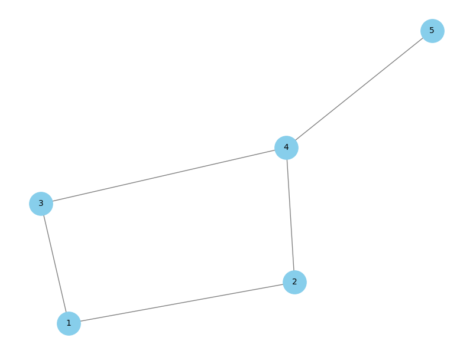
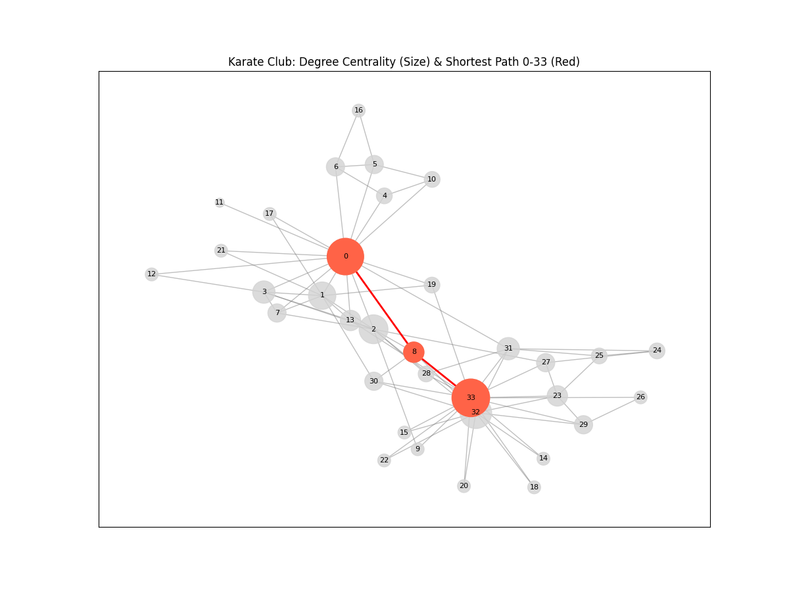

⚠️
GitHub Pages 버전 안내
현재 GitHub Pages에서는 정적 파일만 제공되므로, Python 코드 실행 기능이 제한됩니다. 대신 미리 생성된 예제들과 코드를 확인하실 수 있습니다.
💡 전체 기능을 사용하려면:
• 로컬에서 uvicorn main:app --reload 실행
• 또는 Google Colab에서 코드 실행
📊 NetworkX 코드 예제 모음
1. 기본 그래프 생성
# 기본 그래프 생성하기
import networkx as nx
import matplotlib.pyplot as plt
G = nx.Graph() # 무방향 그래프
# 노드 추가
G.add_nodes_from([1, 2, 3, 4, 5])
# 엣지 추가
edges = [(1, 2), (1, 3), (2, 3), (2, 4), (3, 5), (4, 5)]
G.add_edges_from(edges)
# 그래프 그리기
plt.figure(figsize=(8, 6))
nx.draw(G, with_labels=True,
node_color='skyblue',
node_size=800,
font_size=15)
plt.title("기본 NetworkX 그래프")
plt.show()

2. Karate Club 그래프 - 중심성 분석
# Karate Club 데이터와 중심성 분석
import networkx as nx
import matplotlib.pyplot as plt
# Karate Club 그래프 로드
G = nx.karate_club_graph()
# 중심성 계산
centrality = nx.betweenness_centrality(G)
node_size = [v * 3000 for v in centrality.values()]
# 최단 경로 계산 (노드 0에서 33까지)
path = nx.shortest_path(G, source=0, target=33)
# 그래프 그리기
plt.figure(figsize=(12, 8))
pos = nx.spring_layout(G, seed=42)
# 모든 엣지 그리기
nx.draw_networkx_edges(G, pos, alpha=0.4, edge_color='gray')
# 최단 경로 엣지 강조
path_edges = list(zip(path, path[1:]))
nx.draw_networkx_edges(G, pos, edgelist=path_edges,
edge_color='red', width=3)
# 노드 그리기 (크기는 중심성에 비례)
nx.draw_networkx_nodes(G, pos,
node_size=node_size,
node_color='lightblue',
alpha=0.8)
# 경로상의 노드 강조
nx.draw_networkx_nodes(G, pos, nodelist=path,
node_color='red',
node_size=[centrality[n]*3000 for n in path])
# 라벨 추가
nx.draw_networkx_labels(G, pos, font_size=8)
plt.title("Karate Club: 중심성 분석 및 최단경로")
plt.axis('off')
plt.show()

3. 경제 네트워크 - 가중치 그래프
# 한국 산업 부문간 거래 네트워크 시각화
import networkx as nx
import matplotlib.pyplot as plt
# 가중치가 있는 방향 그래프 생성
G = nx.DiGraph()
# 산업 부문별 노드 추가
sectors = ["제조업", "정보통신", "금융", "유통", "건설", "에너지", "농업", "운송"]
G.add_nodes_from(sectors)
# 가중치 엣지 추가 (단위: 조원)
weighted_edges = [
("제조업", "유통", 45), ("제조업", "운송", 23), ("제조업", "에너지", 18),
("정보통신", "금융", 34), ("정보통신", "유통", 28), ("정보통신", "제조업", 15),
("금융", "제조업", 52), ("금융", "유통", 38), ("금융", "건설", 27),
("유통", "제조업", 41), ("유통", "농업", 19), ("유통", "운송", 33),
("건설", "제조업", 29), ("건설", "에너지", 16), ("건설", "금융", 22),
("에너지", "제조업", 35), ("에너지", "운송", 14), ("에너지", "건설", 21),
("농업", "제조업", 12), ("농업", "유통", 31), ("농업", "운송", 8),
("운송", "제조업", 26), ("운송", "유통", 42), ("운송", "에너지", 17)
]
G.add_weighted_edges_from(weighted_edges)
# 노드 크기를 연결 중심성에 비례하게 설정
degree = dict(G.degree(weight='weight'))
node_size = [degree.get(node, 0) * 5 for node in G.nodes()]
# 노드 색상 설정
sector_colors = {
"제조업": "lightblue", "정보통신": "lightgreen",
"금융": "gold", "유통": "coral",
"건설": "tan", "에너지": "tomato",
"농업": "mediumseagreen", "운송": "plum"
}
node_colors = [sector_colors.get(node, "lightgray") for node in G.nodes()]
plt.figure(figsize=(14, 10))
pos = nx.spring_layout(G, seed=42, k=0.3)
# 엣지 그리기 (가중치에 따른 두께)
edge_weights = [G[u][v]['weight']/20 for u, v in G.edges()]
nx.draw_networkx_edges(G, pos, width=edge_weights, alpha=0.6,
edge_color='gray', arrowsize=20)
# 노드 그리기
nx.draw_networkx_nodes(G, pos, node_size=node_size,
node_color=node_colors, alpha=0.9)
# 라벨 그리기
nx.draw_networkx_labels(G, pos, font_size=11, font_weight='bold')
# 엣지 라벨 그리기 (가중치 표시)
edge_labels = {(u, v): f"{d['weight']}조" for u, v, d in G.edges(data=True)}
nx.draw_networkx_edge_labels(G, pos, edge_labels=edge_labels,
font_size=8, label_pos=0.3)
plt.title("한국 산업 부문간 거래 네트워크 (단위: 조원)", fontsize=16, pad=20)
plt.axis('off')
plt.tight_layout()
plt.show()
# 네트워크 통계 출력
print(f"노드 수: {G.number_of_nodes()}")
print(f"엣지 수: {G.number_of_edges()}")
print(f"평균 가중 차수: {sum(dict(G.degree(weight='weight')).values())/G.number_of_nodes():.1f}")
4. 커뮤니티 탐지
# 커뮤니티 탐지 알고리즘
import networkx as nx
import matplotlib.pyplot as plt
from networkx.algorithms import community
# 더 복잡한 그래프 생성
G = nx.karate_club_graph()
# Louvain 알고리즘으로 커뮤니티 탐지
communities = community.louvain_communities(G, seed=42)
# 각 노드에 커뮤니티 ID 할당
node_community = {}
for i, comm in enumerate(communities):
for node in comm:
node_community[node] = i
# 커뮤니티별 색상 설정
colors = ['red', 'blue', 'green', 'orange', 'purple', 'brown', 'pink', 'gray']
node_colors = [colors[node_community[node]] for node in G.nodes()]
# 그래프 그리기
plt.figure(figsize=(12, 8))
pos = nx.spring_layout(G, seed=42)
# 커뮤니티별로 노드 그리기
for i, comm in enumerate(communities):
nx.draw_networkx_nodes(G, pos, nodelist=list(comm),
node_color=colors[i],
node_size=300, alpha=0.8,
label=f'Community {i+1}')
# 엣지 그리기
nx.draw_networkx_edges(G, pos, alpha=0.5, edge_color='gray')
# 라벨 추가
nx.draw_networkx_labels(G, pos, font_size=10)
plt.title("Karate Club 그래프: 커뮤니티 탐지 결과")
plt.legend()
plt.axis('off')
plt.show()
# 커뮤니티 정보 출력
print(f"발견된 커뮤니티 수: {len(communities)}")
for i, comm in enumerate(communities):
print(f"커뮤니티 {i+1}: {list(comm)} (크기: {len(comm)})")
💻 코드 실행 방법
로컬 환경에서 실행:
- Python과 필요한 라이브러리 설치:
pip install networkx matplotlib - 위의 코드를 복사하여 Python 파일로 저장
- 터미널에서 실행:
python your_file.py
Google Colab에서 실행:
- Google Colab 접속
- 새 노트북 생성
- 코드를 셀에 붙여넣고 실행 (Shift + Enter)
로컬 서버 실행 (전체 기능):
- 프로젝트 클론:
git clone https://github.com/cschung7/ai-finance.git - 의존성 설치:
pip install -r requirements.txt - 서버 실행:
uvicorn main:app --reload - 브라우저에서
http://localhost:8000접속